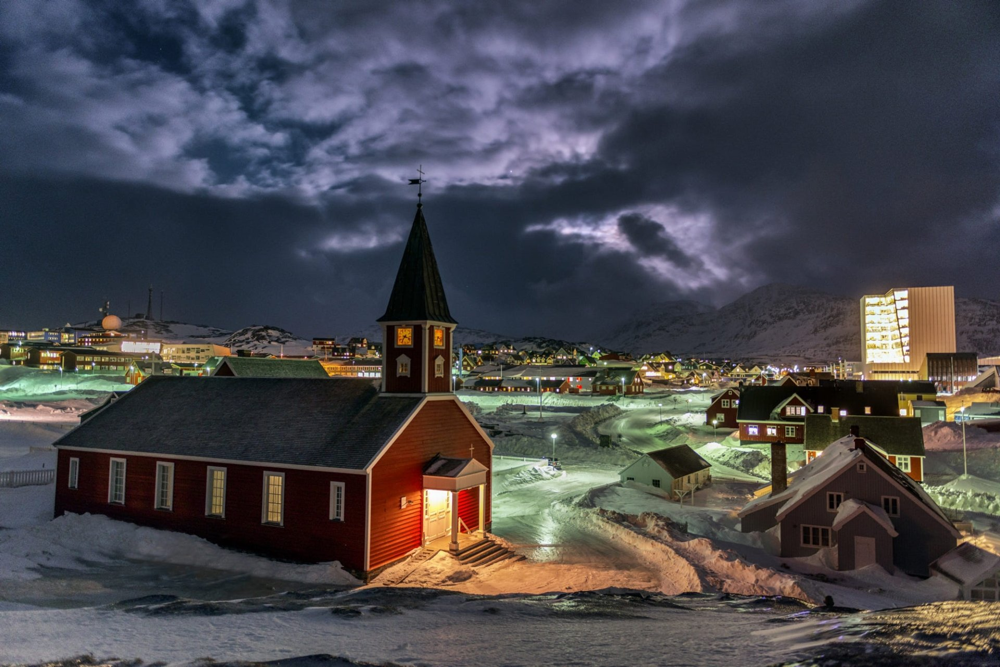

TOP TOURIST SPOT IN GREENLAND
NUUK GREENLAND
Nuuk Cathedral/h3>
Built in the year 1849, the Nuuk Cathedral is one of the oldest buildings in the city. The church features a unique and captivating design, with a combination of Gothic Revival and Romanesque styles. The cathedral's exterior is characterized by its large, imposing tower that is visible from various parts of the city.

Nuuk Art Museum
The Nuuk Art Museum is an important cultural institution in Greenland, showcasing a wide array of Greenlandic art from traditional Inuit art to contemporary works from aspiring local artists. Founded in 2005, the museum aims to preserve and promote the rich cultural heritage of Greenlandic art, while encouraging cultural exchange with international artists and institutions.
Nuuk Water Taxi
Nuuk is the capital city of Greenland, and it is surrounded by the beautiful Nuuk fjord. To explore the fjords, there are various modes of transportation like buses, taxis, and boats. A popular and convenient way to travel through the fjords is taking a Nuuk water taxi.
SISIMIUT GREENLAND
Taseralik Cultural House
If you checked Sisimiut out on the map, you might already know that there is a lake in the middle of the city centre. That is the location of Taseralik Cultural House, a place where you can enjoy art exhibitions, movies and various events. Taseralik is located by the lake, so during the summer you can meet cute baby ducks following their parents roaming around their favourite hangout.
The Red Church
Now you are standing in front of the red church where you can zoom in on the museum area. You can see the port and the mountain, Palasip Qaqqaa (551m) where you can go for a family friendly hike.

The bridge towards Ulkebugten
If you are on the way to the fisherman statue located at the end of the bridge towards the airport, take a short break in the middle of the bridge. I know this might be scary for those who have a fear of heights because you can see the water that is flowing under the bridge where you stand. But please take a look on your right side. It will not take so long to find the mountain Nasaasaaq. Somehow it reminds me of the Swiss Alps or the logo of Paramount Pictures. You might wonder if you can hike Nasaasaaq – the answer is yes! Please see here.
During the summer time, when the weather is nice, the sea water colour is a mixture of green and blue and a lot of boats will pass by under the bridge. You will be able to see the dynamic life of Sisimiut.
ILULISSAT GREENLAND
Hotel Arctic Ilulissat
Most rooms at the Hotel Arctic include a picturesque view over the Icefjord.
Hotel Arctic is Ilulissat’s nicest hotel (4-star).
It is located just out of town, and features the nicest “conference center” in Greenland. How awesome would it be if your work booked a conference for you to attend there? Even if you don’t stay here the hotel bar and restaurant are a spectacular place to hang out.
While the location is not directly in the city center it is still easily walkable to get there.
The Ilulissat Ice Fjord
Aren’t shots of this icefield breathtaking?
Pictures like the one above single handedly made me decide that I had to visit. I’m not the only one as the Ilulissat Icefjord was declared a UNESCO World Heritage Site in 2004.
Make sure you bring proper hiking boots to Greenland. These Colombia boots are my favorite. They are waterproof, affordable, stylish (IMO) and most of all comfortable.
Marvel at the Northern Lights
Seeing the Northern Lights in person has to be on everyone’s bucket list. The enchanting colors of the aurora borealis will never get old to me.
The phenomenon of the Northern Lights occurs above Greenland all times of year. The problem is that you can’t see them if the sun is up. This is especially frustrating in the summer when the sun doesn’t really set. The best times to see them in Greenland begins in the fall and goes until spring.
BACK